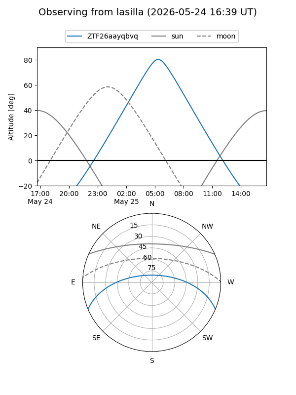
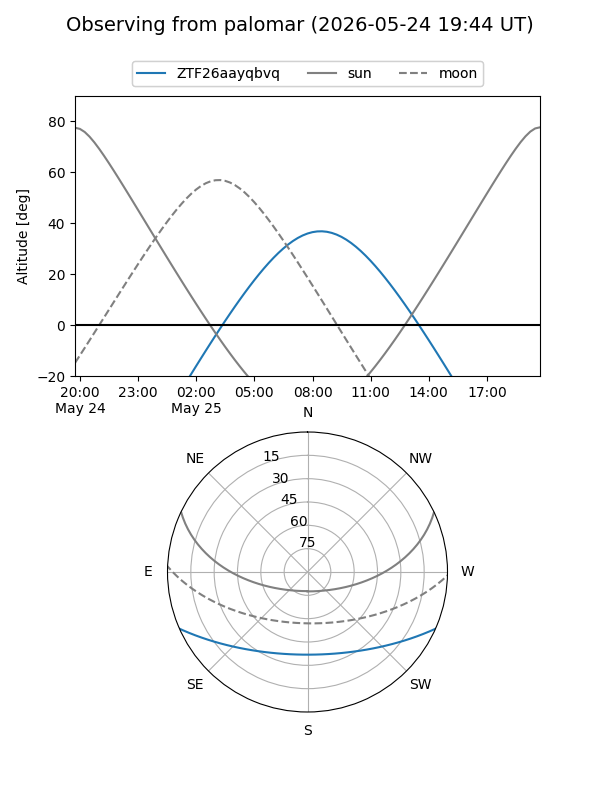

ZTF26aayqbvq
Target ZTF26aayqbvq at 2026-05-25 09:23
Aliases and brokers:
lsst-FINK: link
lsst-Lasair: link
lsst-ALeRCE: link
ztf-FINK: link
ztf-Lasair: link
ztf-ALeRCE: link
alt names
ZTF26aayqbvq (ztf,fink_ztf)
Coordinates:
equatorial (ra, dec) = 251.9363,-19.73980
equatorial (HMS+DMS) = 16:47:44.72,-19:44:23.29
galactic (l, b) = (0.0926,+16.04963)
Flags:
Photometry:
last ztfg=19.10
1 ztfg detections
Lightcurve
Visibility


Additional plots